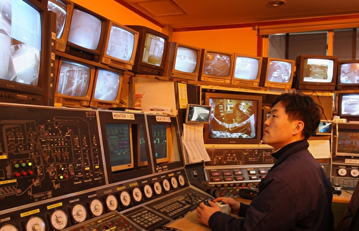
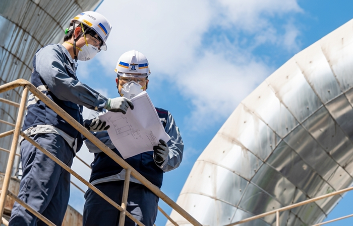
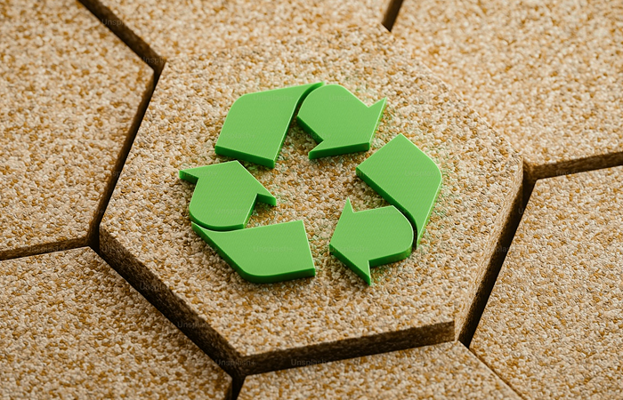

회사소개
회사소개
> 회사소개 > 비전과 핵심가치
Mission Statement비전과 핵심가치
원칙을 지키는 사람들이 모여 더 나은 다음 걸음을 그려갑니다
내실경영과 수익성 위주의 탁월한 경영방식
한일시멘트는 21세기 새로운 경영환경 아래 국내 최고 수준의 정보화 시스템을 갖추고 고부가가치 제품 개발, 다양한 고객서비스 등으로 더욱 앞서 나갈 것입니다. 더 편하고 안전한 세상, 환경과 인간이 조화되는 풍요로운 미래를 위해 한일시멘트는 오늘도 노력하고 있습니다.
-

- 21세기형 스마트 경영
- 전사적 자원관리, 정보통신망, 전자결재제도 등 첨단 인프라 구축을 완료하고 스마트경영체제를 확립해가고 있습니다.
-

- 고객만족 경영
- 생산판매 실명제를 도입해 제품과 서비스에 책임을 다하며, 고객의 의견에 항상 귀 기울입니다.
-

- 환경우선 경영
- 에너지·자원의 효율적 사용과 재활용 확대, 친환경 제품 생산을 경영의 핵심요소로 실천합니다.
내실경영과 안정적인 재무구조를 바탕으로
지속가능한 성장을 이어가고 있습니다

-
- 조직의 사명
- 건설문화 발전을 이끄는 기술과 품질 혁신
- 지속가능한 미래를 위한 친환경적 경영
- 지역사회와 함께 성장하는 상생과 나눔
- 고객과 주주에게 신뢰받는 기업가치 창출
-
- 존재의 가치
- 원칙과 신뢰를 바탕으로 한 정도경영
- 소통과 존중으로 함께하는 조직문화
- 창의적인 사고로 만들어가는 변화와 혁신
- 품질을 최우선으로 생각하는 책임의식
-
- 핵심역량
- 건전한 재무구조를 바탕으로 한 내실경영
- 축적된 기술과 65년 전통의 노하우
- 효율적인 생산·운영 관리시스템
- 차별화된 우수품질과 제품 경쟁력
우리가 지키는 4가지 가치
한일시멘트 모든 구성원이 함께 실천하는 일하는 원칙입니다
-
- 01정도경영
- 원칙과 신뢰를 바탕으로 떳떳하고 투명한 경영활동을 추구합니다
-
- 02소통과 존중
- 구성원 간의 소통과 존중을 바탕으로 건강한 조직문화를 만들어갑니다.
-
- 03변화와 혁신
- 창의적인 사고로 끊임없이 변화하고 스스로 혁신하는 기업입니다.
-
- 04품질 책임
- 품질을 최우선 가치로 삼아 끝까지 고객에 대한 책임을 다합니다.
한일시멘트는 사람, 미래, 환경을 생각하는
경영으로 지속가능한 내일을 만듭니다.